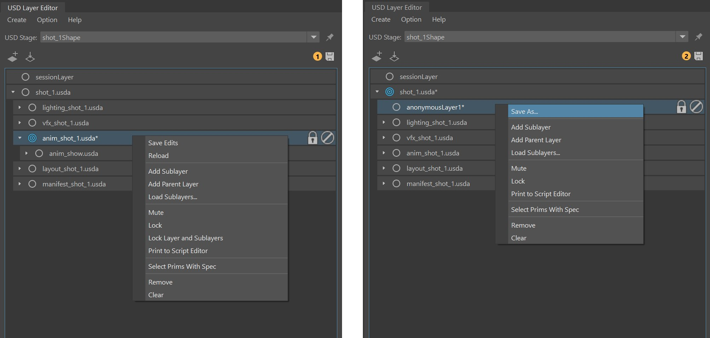

Context menu in the USD Layer Editor
The context menu appears when you right-click a layer.

The following options are available for all editable layers in the Layer Editor:
Save As/Save Edits
When a layer has unsaved edits, an asterisk appears at the end of the layer name.
To save edits to an existing layer, select Save Edits. To save edits to an anonymous layer, select Save As. See Save edits in the USD Layer Editor for more information. You can save USD files relatively to your Maya scene file and parent file directories. To learn more about saving USD files relatively, see Make Path Relative.
Reload
- Reload a layer with its sublayers. This option allows artists to see any updates made to that layer outside the current Maya session.
Add Sublayer
- Add a new anonymous sublayer that is nested under the selected layer.
Add Parent Layer
- Add a new anonymous layer that becomes the parent of the selected layer.
Note: You cannot add a new parent layer to the root layer of the stage.
Load Sublayers
- Load an existing layer as a sublayer to the selected layer by bringing up the Load Sublayers to selectedLayer dialog. See Load Layers.
Mute
- Mute a layer. When a layer is muted, it is ignored by the stage and the contents of the muted layer disappear in the Viewport and Outliner. Muted layers do not participate in value resolution or composition.
Lock
- Lock a layer. When a layer is locked, you cannot target or add sublayers to it. If a locked layer has sublayers, they cannot have new parent layers added to them. See Lock layers.
Lock Layer and Sublayers
Print to Script Editor
- Display the selected layer's code in the Script Editor.
Select Prims with Spec
- Select the prims that contribute to a specific layer. When selected, prims that have a spec on that layer are selected in both the Outliner and Viewport. This includes internal references and excludes external references. This selection method is useful for working with complex composition arcs. (ie. Reference, SubLayer)
Remove
- Remove the layer from the layer stack.
Clear
- Clears all the contents of a layer, including unsaved edits and sublayers. The selected layer remains in the stage, but all of its contents are deleted.
Note: Read-only layers or layers with metadata SetPermissiontoEdit=False will have limited capabilites from the full set of options in the Layer Editor. Options such as Save Edits, Save As, Add Parent Layer and Clear are unavailable for read-only layers. These layers cannot be dragged and dropped singularly. They can only be dragged and dropped in the layer stack if the parent layer is dragged and dropped alongside. The following are examples of read-only layers that display in the Layer Editor:
- Layers that are procedurally generated/computed (ie. an example is from Bifrost).
- Incoming layers in an unshareable stage (layers that drive the Stage Source). This also includes any layers that an advanced user can generate through scripting.